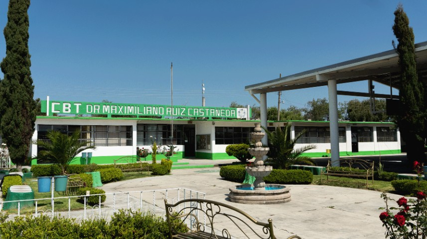
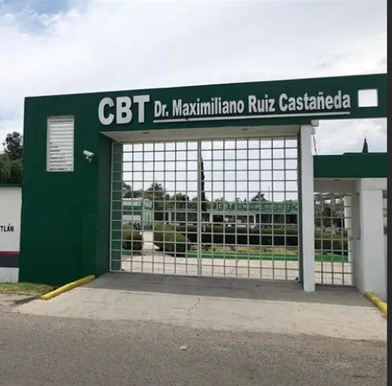
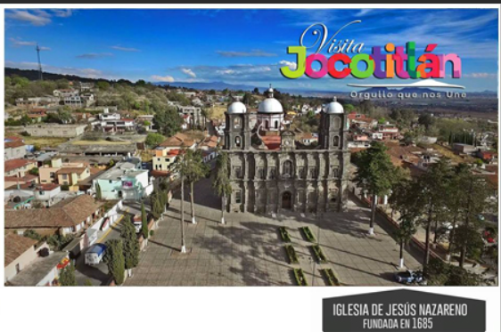

CRÉDITOS DEL PROYECTO
Información sobre la institución y las creadoras
Institución
CBT DR. MAXIMILIANO RUIZ CASTEÑEDA, JOCOTITLÁN.
JOCOTITLÁN, ESTADO DE MEXICO
La Escuela Secundaria Técnica Agropecuaria (E.S.T.A.) fue la instancia impulsora para la creación de una institución que diera continuidad a los estudios de los jóvenes de la región. Fue así que, a dos años de creada la secundaria, se iniciaron las gestiones para crear un colegio de bachillerato.
En su origen, el C.B.T., así llamado hoy, surgió bajo el nombre C.E.T.A. No. 11 y, tras sólo unos meses, se transformó en el C.B.T. No. 14, asumiendo el nombre oficial de Dr. Maximiliano Ruíz Castañeda, con el fin de resaltar los méritos académicos y científicos que este mexiquense aportó a la humanidad.
El proyecto creacional del C.B.T. tuvo desde sus inicios la gestión de autoridades municipales y estatales que vieron en la creación de esta institución una oportunidad de enriquecer cultural y científicamente la zona, atendiendo con esto, las reiteradas solicitudes de padres de familia deseosos por tener un mejor futuro educativo para sus hijos.

Creadoras

ALONDRA ARNULFO PINEDA
Estudiante con interés en el desarrollo web y el diseño de proyectos digitales. Participó en la creación del sitio aportando en la organización de la información y en la estructura visual, contribuyendo a que el contenido fuera claro y accesible.

YESSICA LIZEHT DE JESUS
Colaboró en la recopilación de información histórica y en la redacción del contenido del sitio, asegurando que el proyecto tuviera un enfoque educativo y bien fundamentado.
Imágenes del proyecto
Este proyecto fue elaborado por la institución CBT Dr. Maximiliano Ruiz Castañeda, ubicada en Jocotitlán, Estado de México, como parte de las actividades académicas de sus alumnas de estadías en su último semestre. Durante este proceso, las estudiantes aplicaron los conocimientos adquiridos a lo largo de su formación, participando activamente en la investigación, recopilación y organización de información.
El trabajo tuvo como propósito dar a conocer parte de la historia y riqueza cultural de Jocotitlán, especialmente en lo relacionado con sus periódicos y medios de comunicación locales. A través de este proyecto, se buscó preservar la memoria histórica del municipio y difundirla de una manera accesible y visual.
La participación de la escuela fue fundamental, ya que brindó orientación, herramientas y acompañamiento docente para el desarrollo del proyecto. De esta manera, no solo se fortaleció el aprendizaje práctico de las alumnas, sino que también se generó un aporte significativo a la comunidad, resaltando la importancia de Jocotitlán y el compromiso de la institución con la educación y la cultura.


Información proporcionada por "LIBRERIA LIBERTA". Profesora: Delia Barranco telefono:7121397755